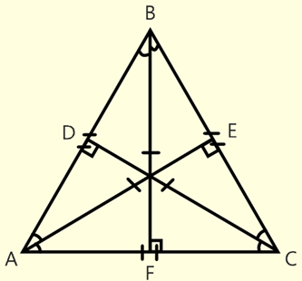
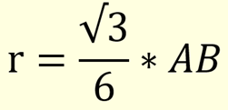

*
Равносторонний Треугольник


# Равносторонний треугольник - треугольник, у которого все стороны равны (AB = BC = AC).
# В равностороннем треугольнике все углы раны между собой и равны 60 градусов.
#В равностороннем треугольнике биссектриса является и медианой и высотой (AE, BF, CD - биссектриса, медиана и высота).
# В равностороннем треугольнике все биссектрисы, медианы и высоты равны между собой (AE = BF = CD).
# Формула радиуса вписанной в равносторонний треугольник окружности: